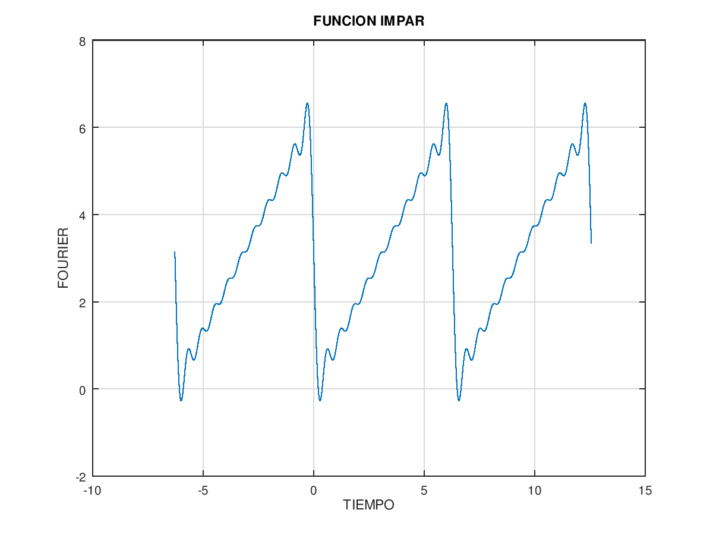
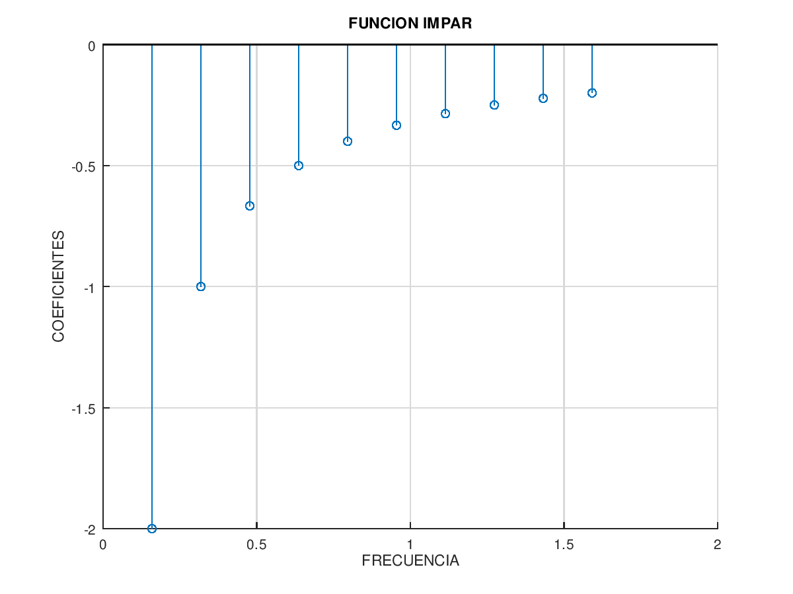
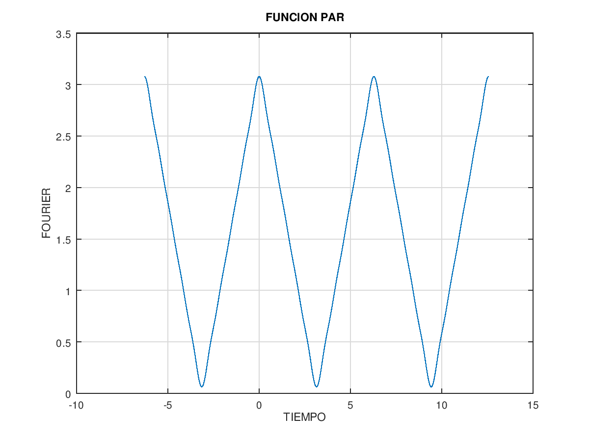
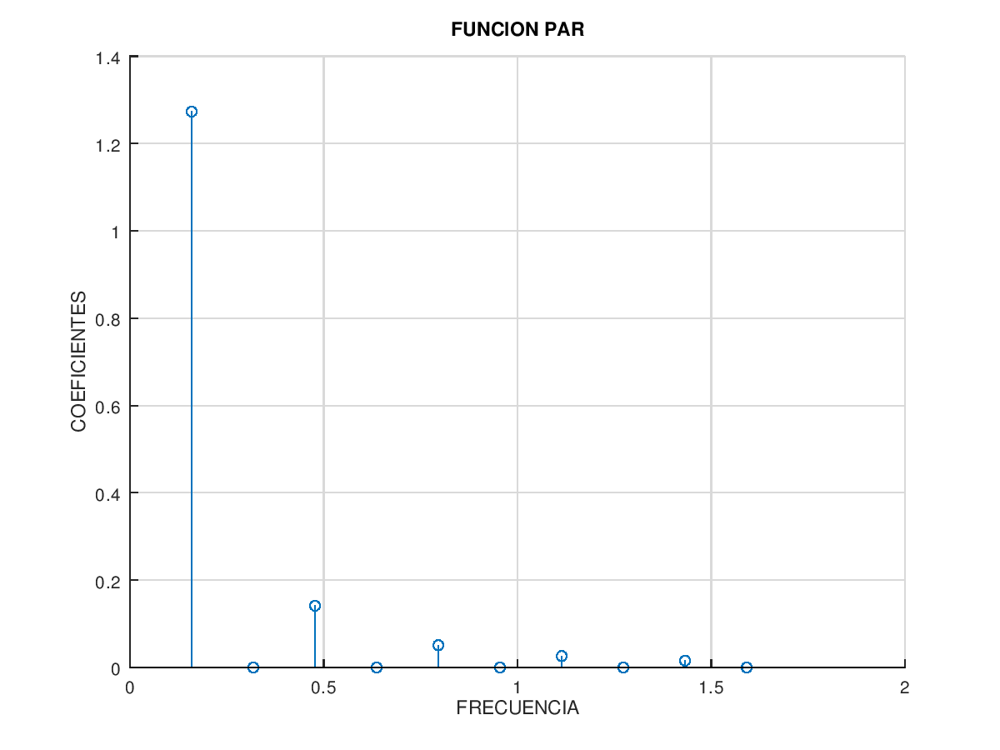

clase191119
clc;
close all;
clear;
T1=2*pi;
dt=0.01;
t1=-2*T1/2:dt:2*T1;
w10=2*pi/T1;
f1=1/T1;
N1=10;
n1=1:N1;
a10=2*pi;
a1n= (0)./ n1 ;
b1n=(-2) ./ n1 ;
[iSerieFourier01]=istf(a10,a1n,b1n,w10,t1,N1);
figure(1);
plot(t1,iSerieFourier01);
xlabel('TIEMPO'),ylabel('FOURIER') ;
grid;
title ('FUNCION IMPAR') ;
figure(2);
stem(f1.*n1 , b1n );
xlabel('FRECUENCIA'),ylabel('COEFICIENTES') ;
grid;
title ('FUNCION IMPAR') ;
T2=2*pi;
dt2=0.01;
t2=-2*T2/2:dt2:2*T2;
w20=2*pi/T2;
f2=1/T2;
N2=10;
n2=1:N2;
a20=pi;
a2n= (-2 ./(pi*(n2.*n2))).*((-1).^n2 -1);
b2n= (0)./ n2 ;
[iSerieFourier02]=istf(a20,a2n,b2n,w20,t2,N2);
figure(3);
plot(t1,iSerieFourier02);
xlabel('TIEMPO'),ylabel('FOURIER') ;
grid;
title ('FUNCION PAR') ;
figure(4);
stem(f2.*n2 , a2n);
xlabel('FRECUENCIA'),ylabel('COEFICIENTES') ;
grid;
title ('FUNCION PAR') ;
